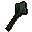

Flynn's Mace Market.
Inventory config
maceshopRun by  Flynn. Open in knowledge graph →
Flynn. Open in knowledge graph →
Located in: White Knights' Castle
Stock
| Item | Stock | Value | Sells for |
|---|---|---|---|
| 5 | 18 gp | 18 gp | |
| 4 | 63 gp | 63 gp | |
| 4 | 225 gp | 225 gp | |
| 3 | 585 gp | 585 gp | |
 Adamant mace | 2 | 1440 gp | 1440 gp |
Shop sells at 100.0% of item value and buys at 60.0%.